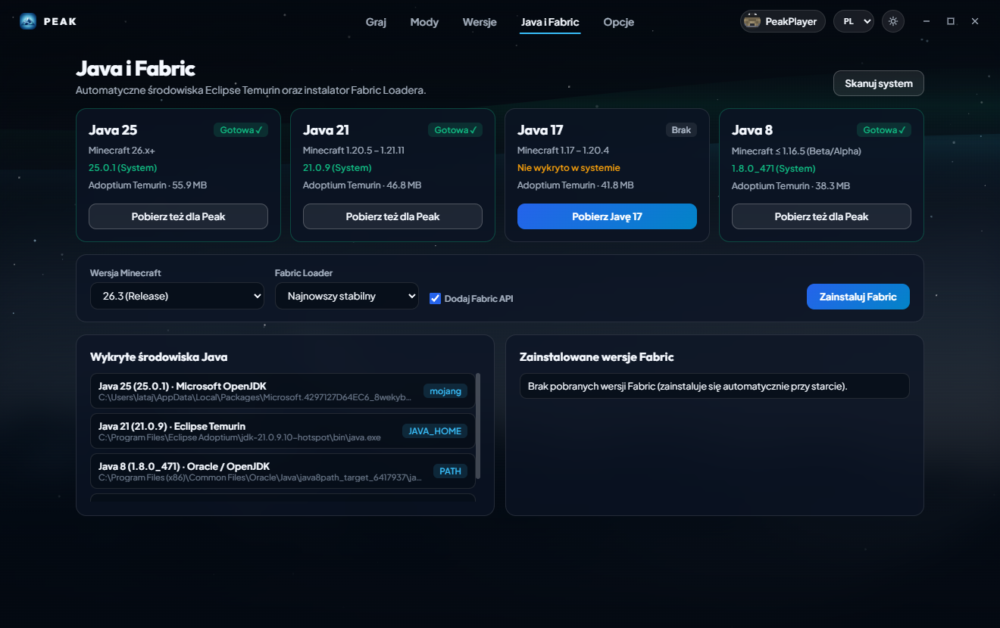

Wszystkie wersje (925+)
Pełny katalog Mojang od klasycznych Alpha i Beta po najnowsze wydania i snapshoty, z izolowanymi profilami.
Czysty, kinowy launcher z motywem Góry PEAK. Ponad 925 wersji gry, mody, shadery i paczki z Modrinth jednym kliknięciem oraz automatyczna Java i Fabric.


Zero zbędnych paneli — cała konfiguracja środowiska dzieje się w tle.
Pełny katalog Mojang od klasycznych Alpha i Beta po najnowsze wydania i snapshoty, z izolowanymi profilami.
Przeglądaj mody, shadery i resource packi z Modrinth, instaluj gotowe zestawy (FPS Boost, Shadery, QoL), aktualizuj 1 klikiem lub wrzucaj .jar / .zip.
Wykrywa lokalną Javę i pobiera brakującą wersję Eclipse Temurin JRE (8, 17, 21 lub 25) przed startem gry.
Instalacja Fabric Loadera jednym kliknięciem oraz interfejs po polsku, angielsku, niemiecku, hiszpańsku, francusku i ukraińsku.
Instalator Windows lub wersja Portable bez instalacji.